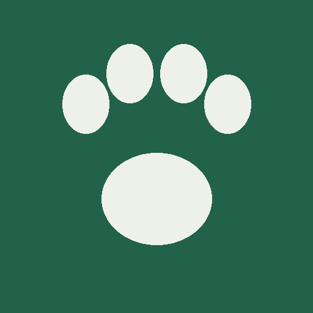

Caderneta de Fauna

Estudo de Fauna
Levantamento de campo
Estudos neste celular
Segurança dos dados
O backup é um arquivo salvo na pasta Downloads do celular. "Enviar backup" abre o compartilhar (WhatsApp, e-mail) para guardar uma cópia fora do aparelho quando houver sinal.
Grupo
Espécie
Sem identificação em campo? Preencha o nome popular ou tire uma foto. O registro fica marcado "a identificar" e você completa depois, na Lista.
Uso do solo
Forma de registro
Foto e coordenada
O GPS funciona sem sinal de celular, mas dentro da mata pode demorar ou perder precisão. Se não pegar, digite o ponto do GPS de mão. UTM SIRGAS 2000, zona 24K.
Horário e observação
Data e hora são preenchidas sozinhas.
Mapa do sítio amostral
Ainda não há KML do sítio amostral neste estudo.
Escolha o arquivo .kml (ou .kmz) no celular. Ele fica guardado dentro do app e abre sem internet. Com internet o mapa de fundo não é usado: você vê só o sítio, as trilhas e os pontos já registrados.
Registros
Estudo atual
Tabelas
Exportar
CSV com ponto e vírgula, abre direto no Excel.
O pacote reúne num só arquivo: planilha, KML, relatório de fotos, fotos e o arquivo do estudo para o app de análise.
O download não está disponível aqui. Copie o conteúdo e cole num arquivo .csv.
Envio para o Google Drive
—
Em campo tudo fica gravado no celular. No modo recomendado, o envio acontece sozinho quando o celular entra no Wi-Fi. O botão Enviar agora funciona em qualquer conexão e avisa antes de usar dados móveis.
Cópia de segurança
Arquivo .json com tudo que está no celular. Não abre no Excel: serve para restaurar os dados neste app, por exemplo ao trocar de celular.
Estudo e campanha
Fica salvo neste aparelho e vai em todo registro novo.
Sítio amostral (KML)
Escreva o nome do estudo acima antes de subir. O KML aparece na aba Mapa, junto com os pontos registrados.